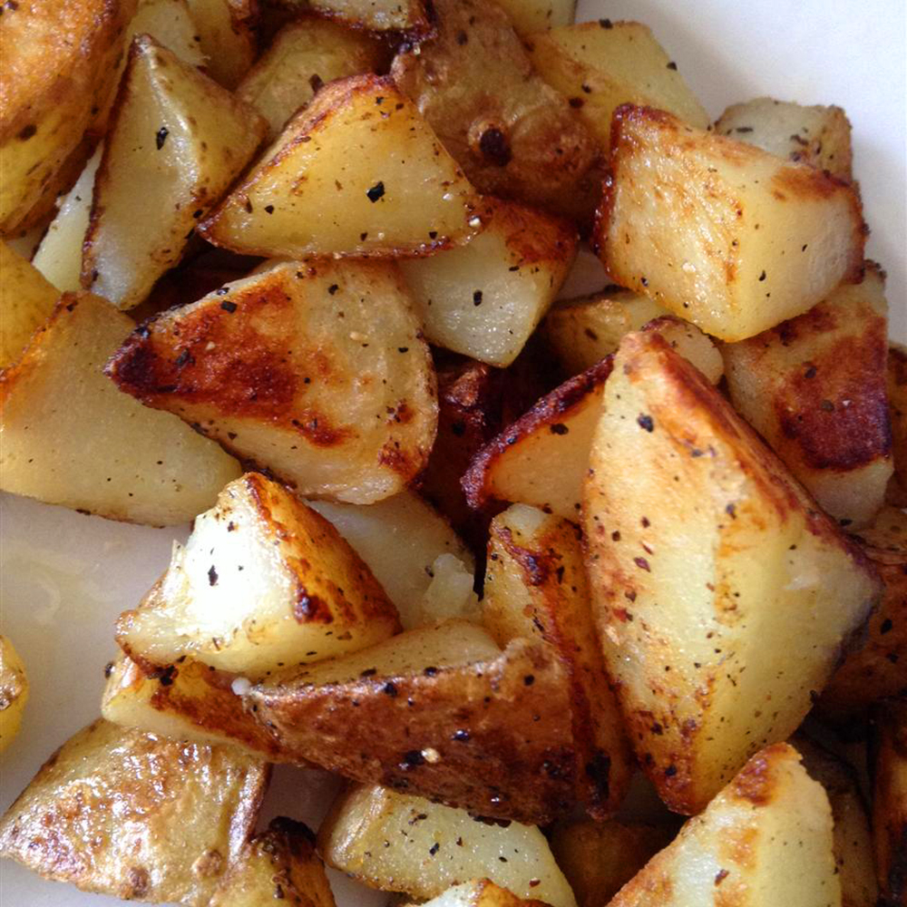

Quick and easy homefries

Description
These home fries turn out crispy every time. They're great for breakfast or as
a side dish. If you prefer crispy hash browns, use shredded potatoes (instead
of cubed) and follow the
recipe
directions.
Ingredients
- 3 medium russet potatoes, cubed
- 3 tablespoons butter or margarine
- salt and ground black peper to taste
Steps
- Rinse potato cubes with cold water and drain well.
-
Melt butter in a large skillet over medium heat. Place potatoes in the
skillet and season with salt and pepper; mix well. Cover and cook for 10
minutes
-
Remove the lid and cook, turning frequently, until brown and crisp on all
sides, about 10 more minutes.
Homepage